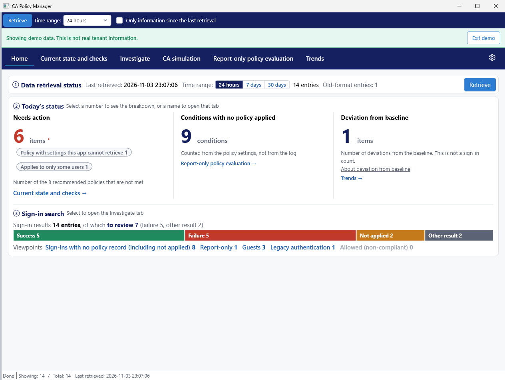
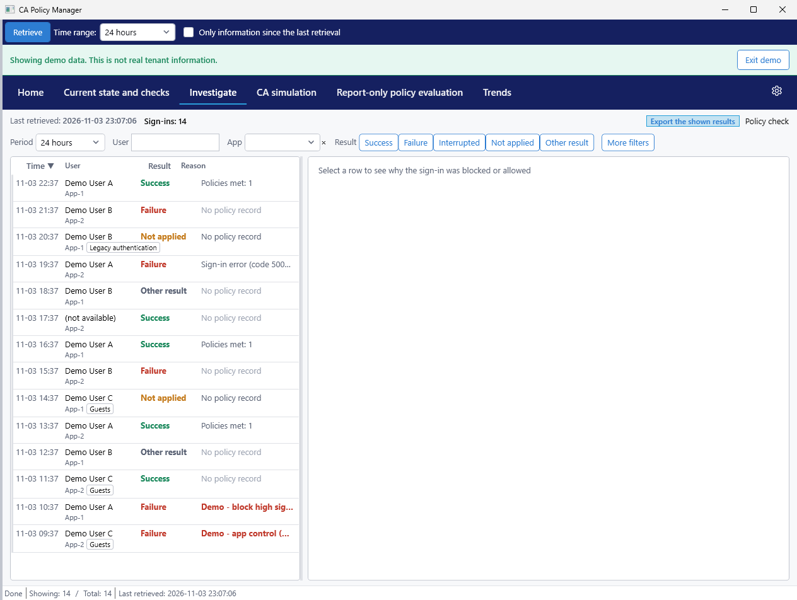
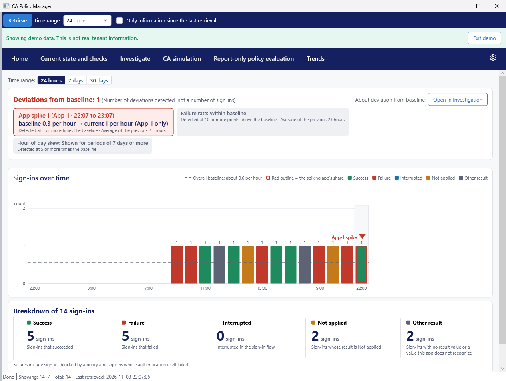
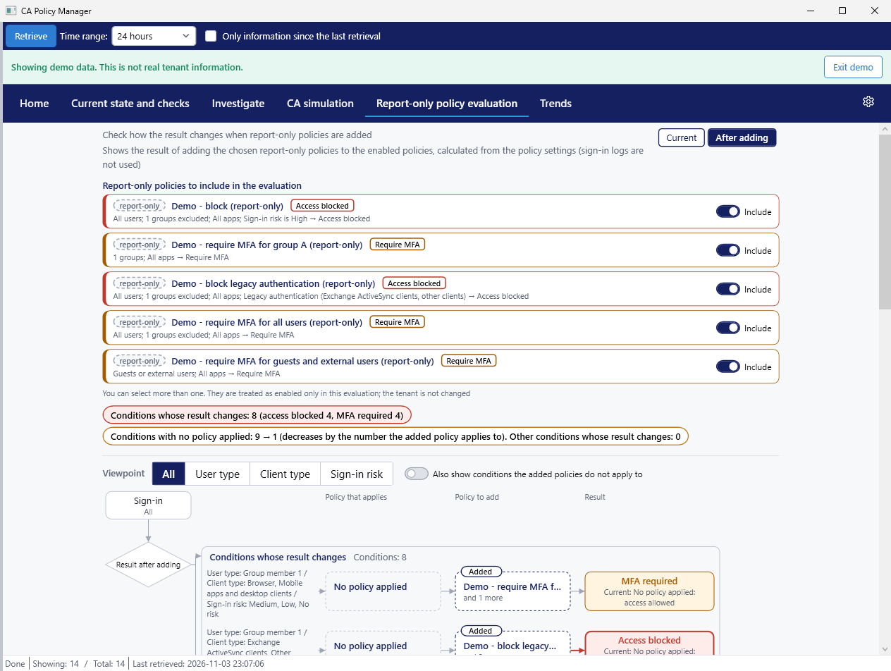

Do your policies cover guest sign-ins?
You add a policy to require MFA for administrator roles, then an exception for one department, and the list keeps growing. Then you check and find that no policy applied to guest sign-ins. Gaps like that are hard to spot by opening policies one at a time.
CA Policy Manager is a Windows app for IT administrators who manage their own organization's Microsoft Entra tenant. It reads sign-in logs and policy definitions from Microsoft Graph and shows which conditions and sign-ins no policy covers.
Problems this solves
How do I find the conditions no Conditional Access policy applies to?
Home shows the number of conditions with no policy applied. The app splits combinations of conditions (user, app, location, and so on) into regions based on your enabled and report-only policies, and counts the regions that no enabled policy applies to. Disabled policies are not used. The count includes combinations that no one has signed in with yet, so you can find gaps before real sign-ins hit them. If you switch to After adding in the paid edition's Report-only policy evaluation, the number on Home also shows the value after adding.
How can I check whether guest users are covered by Conditional Access?
In the sign-in search on Home, the Guests viewpoint shows how many guest sign-ins there are. Select it to open the Investigate tab, where you can filter by period, user, app, and result and review them one at a time.
To check from the policy side, use Current state and checks. In the Zero Trust or Remote work category, the check for the recommendation "Require multifactor authentication for guest access" names which of the six guest and external user types your enabled policies do not cover: local guests (internal guest users), B2B collaboration guest users, B2B collaboration member users, B2B direct connect users, other external users, and service provider users.
How do I check that my policies follow the Microsoft recommended templates?
The app assesses 16 of the 21 Conditional Access policy templates on Microsoft Learn and shows where your policies differ from the recommendations, such as MFA for administrator roles. Of the other five templates, the one that needs Microsoft Purview is shown as "Not checked: needs Microsoft Purview". The remaining four, including the three AI Agents templates, are not listed. You can switch between five categories: Secure foundation, Zero Trust, Remote work, Protect administrator, and Emerging threats.
Needs action on Home counts only the eight items of the default category, Secure foundation. A flow diagram lets you switch the view between user type, device type, OS, and location. For some items, the app also shows the kind of cause. There are six kinds: a missing permission; group members cannot be retrieved because GroupMember.Read.All is not consented to; the policy has settings this app cannot read; a setting the recommendation requires does not exist in the tenant; not identified; and a temporary failure.
How do I find a policy that is still in report-only mode?
If a policy you meant to turn on is still in report-only mode, or covers only some users, the app shows the cause and where to check. For policies with settings that Microsoft Graph cannot return, it directs you to the admin center.
A user says they cannot sign in. How do I see why they were blocked?
On the Investigate tab, filter by period, user, app, and result, then select the row. The app shows why the sign-in was allowed or blocked. The sign-in details start with a conclusion that tells apart two cases: a policy blocked the sign-in, or the policies were met but the sign-in itself failed. For a sign-in blocked by a policy (an applied policy has the result failure), select Show the cause to see the policy that blocked it as a flow diagram in a separate window.
How do I find out why an unexpected sign-in was allowed?
On the same Investigate tab, select the row for the unexpected access to see the reason it was allowed.
How do I find policies that use empty groups or do not exclude emergency access accounts?
Policy check on the Investigate tab covers the following:
- Groups used by policies: groups marked Not found (it may have been deleted) or No members appear first. Showing members requires consent to the optional permission GroupMember.Read.All.
- Emergency access exclusion: if you specify your emergency access accounts on the Settings screen, the app shows how many policies do not exclude them. Exclusion through excluded groups is also taken into account. If you have not specified them, the check shows Not checked.
- Overlap of excluded groups: the number of excluded groups that overlap
- Defender for Cloud Apps (MDCA) integration: the number of related policies
How do I notice sudden sign-in spikes, rising failure rates, or unusual hours?
The app splits sign-in counts into success, failure, interrupted, not applied, and other result. It compares sudden increases for an app, the failure rate, and time-of-day patterns with the baseline, and shows any deviation. The last interval of the selected period is treated as now, and the average of the earlier retrieved intervals is the baseline. For the failure rate, the baseline is the total failures of those intervals divided by their total sign-ins. Time-of-day patterns are checked only when the period is 7 or 30 days and at least 7 days have been retrieved.
Limits: the app retrieves interactive sign-ins only; non-interactive sign-ins are not included. The period is 30 days at most. Results are estimates from the app's own computation and may not match Microsoft's official evaluation. Microsoft Entra ID P1 or P2 is required. The app never changes your tenant settings. To see results without waiting for real sign-ins, or to preview the impact of a report-only policy, see the paid-edition features below.
What the impact preview covers: the paid edition's Report-only policy evaluation shows how results change, for each combination of conditions, when you add report-only policies to your existing enabled policies. It does not show the impact on individual users, or the impact of editing a policy that is already enabled.
What you can see
- Conditions and sign-ins that no policy covers
- How your policies differ from the Microsoft Learn template recommendations
- Why a sign-in was allowed or blocked
- Sign-in trends and deviations from the baseline
Where no policy applies
Home shows three numbers: items that need action, conditions with no policy applied, and deviations from the baseline. Conditions with no policy applied include combinations that no one has signed in with yet.
For sign-ins that did happen, Home shows how many have no policy record. Select the count to open the Investigate tab and review them one at a time.

How your policies compare with the recommendations
The app checks your policies against the recommendations in the Microsoft Learn templates, category by category. If a policy you meant to turn on is still in report-only mode, or a policy covers only some users, the app shows the cause and where to check.
The app shows results in a flow diagram. You can switch the view between user type, device type, OS, and location. For policies with settings that Microsoft Graph cannot return, the app directs you to the admin center.

Why a sign-in was allowed or blocked
This helps when someone reports they cannot sign in, or when you see access you did not expect. Filter by period, user, app, and result, then select a row to see the reason.

You can also check the groups your policies use. Empty groups, groups that may have been deleted, and policies that do not exclude your emergency access accounts all appear under Policy check on the Investigate tab. You specify your emergency access accounts on the Settings screen. The image below shows the top of the Settings screen, which does not include this item.

Sign-in trends
See how sign-in counts change, split into success, failure, interrupted, not applied, and other result. The app compares sudden increases for an app, the failure rate, and time-of-day patterns with the baseline, and shows any deviation.

Preview the impact of a change without waiting for real sign-ins
These features are in the paid edition.
CA simulationPaid edition
Specify conditions such as user, app, location, and risk to see which policies apply and the result, such as Access blocked, MFA required, or No policy applied: access allowed. You do not need to wait for a real sign-in. As the user type, you can choose a user in your organization or one of the six guest and external user types.
Report-only policy evaluationPaid edition
Preview what changes before you turn a report-only policy on. The app also shows how many fewer conditions would have no policy applied.
Change proposalsPaid edition
Create a report-only policy JSON and a set of steps as text. An administrator applies the change in the admin center.
CSV and HTML exportPaid edition
Export investigation results to CSV and to an HTML report.
What the exports contain
- Audit report: counts for seven items, such as the total, guest user access, and access no CA policy applied to; the top three allow and deny reasons; and tables of the top 20 users, apps, and policies, with the rest totaled in one row.
- Audit report CSV: the same counts and tables as the audit report, plus every sign-in that matches one of four viewpoints (sign-ins with no policy record, report-only mode, guest users, and allowed from non-compliant devices). Each row has seven columns: date and time, app, user, IP address, user type, result, and reason. When User display in Settings is Anonymous, users appear in anonymized form and IP addresses as rounded ranges.

Get the app and system requirements
- Get it from: Microsoft Store
- The app is free to download.
- Paid edition: a one-time purchase add-on in Microsoft Store. Buy it from the purchase button in the app.
- OS: Windows 10 version 2004 or later, Windows 11
- Languages: Japanese, English
- License: Microsoft Entra ID P1 or P2
- Before you start: an app registration in the Microsoft Entra admin center (steps)
- Network: a connection to Microsoft sign-in and Microsoft Graph is required.
How to start
- Install the app from Microsoft Store and agree to the Terms of Use.
- Register an app in the Microsoft Entra admin center.
- Enter the tenant ID and the client ID in the connection settings, then run the connection test.
- On Home, select a time range, then select Retrieve (detailed steps).
Frequently asked questions
Will the app change anything in my tenant?
No. CA Policy Manager uses read-only permissions. Change proposals in the paid edition are text only, and an administrator decides whether to apply them.
Where is the data stored?
Normally on this PC, in the current Windows user's folder. In the Microsoft Store version, Windows may store it in the corresponding location under %LocalAppData%\Packages. The app does not send it to the publisher or to any third party. User names and group membership, policy definitions, and connection settings are encrypted. Sign-in records, application display names, and the consent record are not. See Data storage and deletion for details.
Which permissions does it need?
AuditLog.Read.All, Policy.Read.All, and User.Read.All are required. Application.Read.All and GroupMember.Read.All are optional; the app uses them to show app names and group members. All five are read-only delegated permissions.
Are non-interactive sign-ins included?
No. The app retrieves interactive sign-ins only.
Do the results match Microsoft's decisions?
Not always. They are estimates from the app's own computation, not an official Microsoft evaluation. Before changing a policy, verify in a test environment or in report-only mode.
Sumikko Lab products
Last updated: 2026-11-18